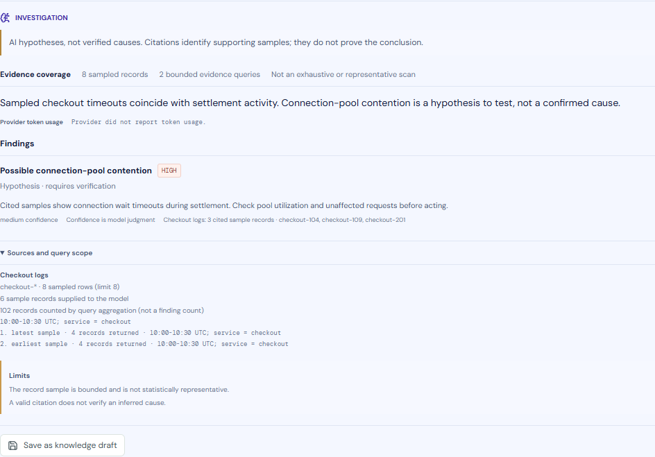

Connect your data
Explore Elasticsearch, ClickHouse, BigQuery, Loki, Prometheus, VictoriaLogs, and VictoriaMetrics. Credentials stay on the server and are encrypted.
EXPLORE OPERATIONAL DATA
Explore your data. Investigate a question.
Explore across seven data connectors. Investigate Elasticsearch or ClickHouse Data Views with up to eight sampled records, source-side aggregations, and citations you can inspect.
Open source · Bring your own data · Choose your AI provider

THE IDEA
Explore pages through matching records. AI investigations instead examine up to eight sample rows per selected Data View, using at most three bounded queries for latest records, earliest records when useful, and an unfiltered fallback if proposed filters return no rows. Source-side aggregations can count a wider result set. Results show sampled rows, aggregation counts, and cited records separately.
A CLEAR PATH THROUGH THE DATA
Explore Elasticsearch, ClickHouse, BigQuery, Loki, Prometheus, VictoriaLogs, and VictoriaMetrics. Credentials stay on the server and are encrypted.
Use saved Data Views, time windows, source-side sorting, histograms, and paging to inspect query results.
Choose Elasticsearch or ClickHouse Data Views and a saved AI profile. The server validates structured filters, examines at most eight sample rows per Data View in at most three queries, and can request broader source aggregations. Other connectors support Explore but not AI query translation yet.
BUILT AROUND INSPECTION
AI sees at most eight sampled record rows per Data View. The latest/earliest sample and empty-filter fallback are bounded; this is not statistically representative.
Source aggregations may count more records than were sampled. A finding cites distinct, validated sample records—not the aggregation total.
Citations make examples traceable; they do not prove an AI conclusion. Inspect the query scope and records before acting.
A NOTE ON TRUST
The question, field metadata, compact sample records, and aggregation summaries are sent to the configured AI provider. Connection credentials and source URLs are not. Review provider retention terms before sending sensitive data. Record text is untrusted input; citations make examples traceable, not conclusions correct. Results are hypotheses, not verified diagnoses. The server has no built-in authentication or authorization; put it behind a trusted authenticated gateway.
INVESTIGATE WITH CONTEXT